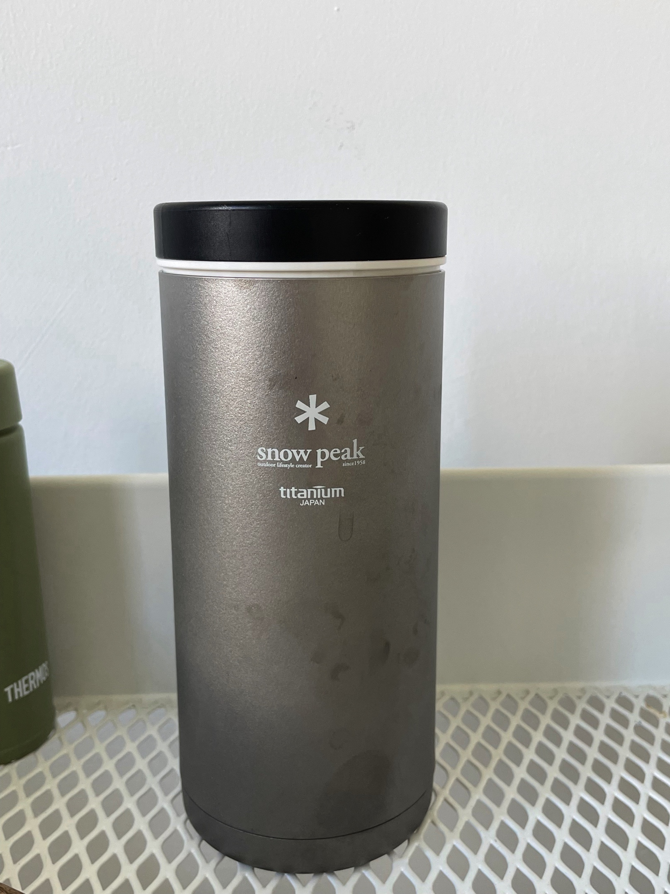

Snow Peak保温杯两年使用感受
2022-10-26
TL;DR
优点：逼格高、功能多（保温、保冷、咖啡）、口径大
缺点：
- 偏重。虽然是钛杯，但在重量上没有体现优势（搭配保温盖207.4g）
- 漏水！这是真的
- 不保温。光这一点，作为保温杯可以打负分了
满分5分的话，
颜值：⭐️⭐️⭐️⭐️
实用性：⭐️⭐️
综合：⭐️⭐️
平时喝绿茶比较多，不锈钢保温杯泡茶不太合适，玻璃的又太重，下单买了这款350 Kanpai。
初拿到手，还是挺惊艳的，钛金属独有的光泽，内部一体成形（据说这款是有焊接的，不过没找到焊接点）。与其他钛杯一样，容易留指纹。

盖子相当厚实，看着挺有分量。可是，漏水！开始以为是水太烫了，试着灌入90度，80度，70度，依旧漏水。放在包里，没一会儿包里全湿。测试下来，在剧烈摇晃下，凉水也漏。
亚马逊也有同样的反馈，可惜买的时候头脑发热，直接无视。平时只能当敞口杯用，或者换上咖啡盖。感觉花了保温杯的价格，买了个双层直饮杯。
保温能力也是挺差的，特地去网上搜了下，可能是因为杯口处比较薄，导致热量散发较快。实际使用下来，在倒100度开水的情况下，不到半天就凉了，可以直接喝。我喝茶比较多，这点反而成为个小优势。
这款保温杯现在好像改名为FES-181，外观一致，不知道做工有没有提升。
陆陆续续买了不少Snow Peak杯子了，除了保温杯，其他都可以打满分。比较推荐TW-800这款，相当轻量，日常携带使用很合适，不过因为是单层的，不具备保温效果，泡茶基本不影响口感。